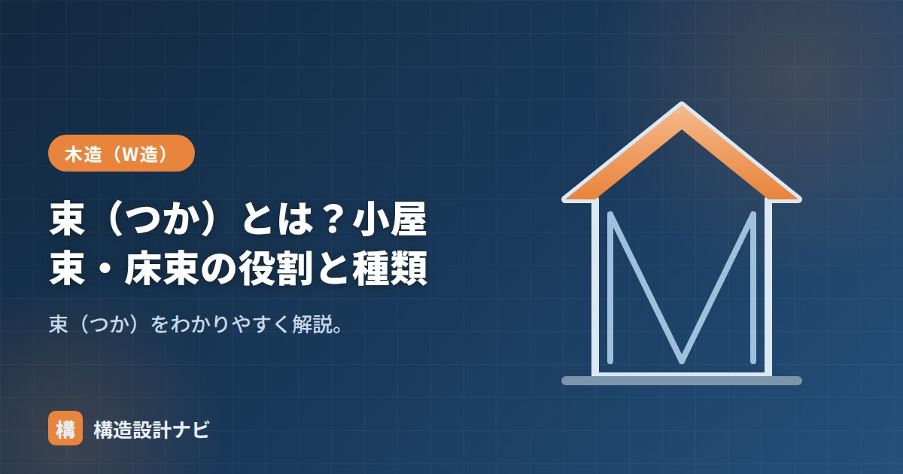

束（つか）とは？小屋束・床束の役割と種類

束（つか）とは、上の横材を下から支える短い垂直材の総称です。柱と同じく鉛直に立てる部材ですが、階をまたいで通しで立つ柱とは異なり、束は小屋組や床組の中で局所的に荷重を受け渡すために使われる、比較的短い部材である点が特徴です。使う場所によって、屋根を支える小屋束、床を支える床束などと呼び分けられます。日本の木造建築では古くから使われてきた部材で、社寺建築の対束（角材の束）から現代の鋼製束まで、形や材料は時代とともに変化してきました。
- 束は上の横材を下から支える短い垂直材で、柱とは役割・長さが異なる
- 代表的なものに小屋組の小屋束、床組の床束がある
- 材料は木製・鋼製・プラスチック製があり、用途によって使い分ける
束とは
読み方は「つか」。柱のように長くはなく、短く立てて荷重を下へ伝える部材です。代表が小屋組の小屋束と、床組の床束です。柱が基礎から軒まで通して建物を支える主要な鉛直材であるのに対し、束はあくまで梁や大引などの横架材を局所的に支える補助的な鉛直材という位置づけになります。長さも数十センチ程度と短いものがほとんどです。
柱との違い
束と柱はどちらも鉛直に配置される部材ですが、担う役割には明確な違いがあります。柱は建物の主要な骨組みとして基礎から上部まで通り、鉛直荷重に加えて地震力・風圧力などの水平力にも抵抗します。一方、束は小屋組や床組の内部で使われる補助的な部材で、母屋や大引といった横架材の中間支点として、たわみを抑える役割が中心です。そのため断面も柱より小さく、必要とされる耐力や接合方法も柱とは異なります。
小屋束と床束
| 小屋束 | 床束 | |
|---|---|---|
| 場所 | 小屋組（屋根） | 床組（1階床） |
| 支えるもの | 母屋・棟木 | 大引 |
| 受けるもの | 小屋梁 | 束石・土間 |
小屋束は小屋梁の上に立ち、屋根荷重を支える母屋や棟木を受ける部材です。屋根の勾配に応じて長さの異なる束を並べ、垂木を通じて伝わる屋根荷重を小屋梁へと伝達します。床束は基礎の上や束石の上に立ち、1階の床を支える大引を受ける部材で、床下空間の高さに応じて短い部材が並びます。どちらも「横架材を下から支える」という役割は共通していますが、支える対象の荷重の向きや大きさ、設置環境（屋根裏か床下か）が異なります。
種類
- 木製束：伝統的。腐朽・シロアリに注意。
- 鋼製束：高さ調整ができ耐久性が高い。床束で主流。
- プラスチック束：腐らず軽い。水回りなどに。
木製の床束は地面からの湿気の影響を受けやすく、腐朽やシロアリ被害の原因になりやすい部材です。現在の木造住宅では、床下の耐久性を高めるために鋼製束が広く採用されています。既存住宅の点検・改修の際は、束の劣化状況を確認することが重要です。
Q1. 束はどのくらいの間隔で設置しますか？
床束の場合、大引の下に910mm前後の間隔で設置するのが一般的な目安です。ただし荷重条件や大引の断面によって適切な間隔は変わるため、実際の設計では構造計算や仕様規定に基づいて決定します。
Q2. 束が傾いたり沈んだりするとどうなりますか？
束は横架材を局所的に支える部材のため、束が沈下・傾斜すると床や屋根のたわみ・きしみの原因になります。床鳴りや床の傾きが気になる場合は、床下点検口から束の状態を確認することが有効です。
床下点検で束を見るときは、まず鋼製束の高さ調整用ナットが緩んでいないかを確認します。木製束が残っている古い住宅では、地面に近い部分の腐朽やシロアリ被害の有無も合わせてチェックするようにしています。
束が立つ場所（図解）
柱との違いを整理する
| 比較項目 | 束 | 柱 |
|---|---|---|
| 長さ | 短い（30cm〜1m程度） | 長い（階高分＝2.8m前後） |
| 階をまたぐか | またがない | 通し柱はまたぐ |
| 負担する力 | 鉛直力のみ | 鉛直力＋水平力＋曲げ |
| 座屈の心配 | 短いのでほぼない | あり（座屈長さの検討が必要） |
| 耐力壁との関係 | 関係しない | 耐力壁の端部として重要 |
| 引き抜きの検討 | 不要（原則） | 必要（ホールダウン金物） |
| 断面の目安 | 90角程度／鋼製束 | 105角・120角 |
もっとも本質的な違いは「水平力を負担するかどうか」です。柱は地震や風の水平力を受け、耐力壁の端部として引き抜き力にも耐える必要があります。一方、束は上から下へ鉛直荷重を渡すだけの部材で、水平力の伝達経路には入っていません。だから短くて細くても成立するのです。
束にまつわる不具合と点検
| 症状 | 考えられる原因 | 確認する場所 |
|---|---|---|
| 床がきしむ・鳴る | 木製束の乾燥収縮による隙間 | 床下点検口から床束と大引の接触 |
| 部分的に床が沈む | 束石の沈下、束の腐朽・シロアリ | 束の根元、束石まわりの湿り |
| 天井にひび・たわみ | 小屋束の緩み、小屋梁のたわみ | 小屋裏点検口から小屋束の垂直 |
| 屋根が部分的に波打つ | 小屋束の沈み、母屋のたわみ | 小屋裏の母屋と束の接合 |
| 束が傾いている | 施工不良、地盤の変動 | 下げ振り・水平器で垂直を確認 |
束は上下の材に挟まれているだけの部材なので、わずかな隙間があると荷重をまったく負担しません。上の材が乾燥で縮んだり、束自体が縮んだりすると、見た目には立っているのに実は浮いている、という状態が起こります。
この場合、その束が負担するはずだった荷重は隣の束や梁に回り、床のたわみや鳴りにつながります。木造住宅の床鳴りの多くはこれが原因です。
だからこそ、乾燥収縮しない鋼製束が新築で主流になりました。小屋束についても、金物（ホゾパイプ・かすがい）で梁としっかり緊結し、浮きが生じないようにするのが現在の標準です。
まとめ
- 束（つか）は上の横材を下から支える短い垂直材の総称。柱とは役割・長さが異なる。
- 小屋束は母屋・棟木を、床束は大引を支える。
- 木製・鋼製・プラスチックがあり、床束では鋼製束が主流。
- 木製束は腐朽・シロアリのリスクがあるため、点検・改修時は劣化状況の確認が必要。